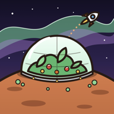

Privatlivspolitik
Rumkolonien · gældende fra 19. oktober 2026
Hvad gemmes, og hvor
- På din enhed: Hele din koloni gemmes lokalt i appen eller browseren. Du kan slette den under ? → Start en ny koloni.
- I skyen (Supabase, datacenter i Stockholm i EU): en kopi af din koloni, dit niveau, dit spillernavn og dine scorer på ranglisterne. Annoncer i Rumposten, hjælp til naboer og bidrag til terraformingen gemmes også, så andre spillere kan se dem.
- Din kolonikode: Kolonien er knyttet til en tilfældig, hemmelig kode, som kun ligger på dine enheder. Databasen gemmer kun en hash af koden og aldrig koden selv.
Hvad gemmes ikke
- Ingen e-mail, intet telefonnummer, ingen adresse og ingen konto.
- Ingen placering, kontakter, fotos eller andre data fra din telefon.
- Ingen reklamer, ingen analyseværktøjer og ingen sporing på tværs af apps eller hjemmesider.
Hvad andre spillere kan se
Dit spillernavn og dit niveau står på ranglisterne. Naboer kan besøge din koloni og se kortet, men aldrig dit lager, dine kreditter eller din kolonikode. Vælg et navn, du har det godt med at vise. Du kan ændre det når som helst under ?.
Notifikationer
Hvis du slår beskeder til, planlægges de lokalt på din telefon. De sendes ikke gennem en server, og du kan slå dem fra i spillet eller i telefonens indstillinger.
Børn
Spillet indsamler ikke personoplysninger. Det eneste, man selv skriver, er spillernavnet, så det er en god idé, at børn ikke bruger deres rigtige navn.
Slet dine data
Start en ny koloni i spillet, så erstattes den gamle. Vil du have kolonien slettet helt fra skyen, kan du skrive via linket nedenfor med koloniens navn. Del aldrig din kolonikode eller dit link offentligt, for de giver adgang til kolonien.
Kontakt
Spørgsmål om privatliv kan stilles på GitHub.
In English
Rumkolonien has no accounts, ads, analytics or tracking. Your colony is saved on your device and, so you can continue on other devices, in a database in the EU (Supabase, Stockholm). The database stores your colony, level, chosen player name and leaderboard scores, linked to a hash of a random secret code that only exists on your devices. Notifications are scheduled locally on your device. To have your data deleted, contact us via the GitHub link above with your colony name. Never share your colony code or link publicly.